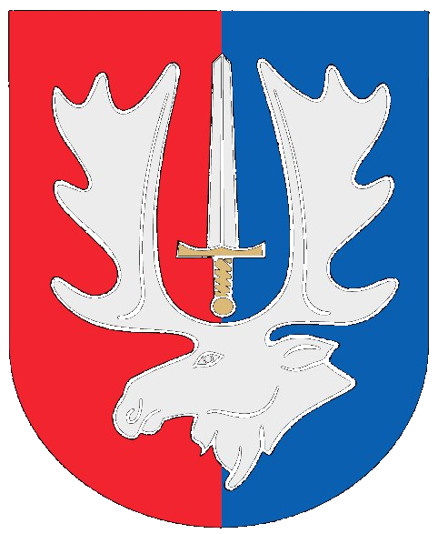

Meilės, miškų ir legendų maršrutai
Atrask Širvintas žaisdamas. Kiekviena stotelė – naujas istorijos puslapis.
Planuojate išvyką ir ieškote, ką pamatyti Širvintose ar Širvintų rajone? „Širvintos keliauja" – tai asmeninė iniciatyva, kviečianti atrasti įdomiausias Širvintų krašto lankytinas vietas, pažintinius maršrutus ir istorinius objektus iš naujo.
Čia rasite idėjų, ką veikti Širvintose, kur nueiti savaitgalį, kokius maršrutus pasirinkti su šeima, draugais ar atvykus svečiams. Nesvarbu, ar norite pasivaikščioti Briedžių taku Širvintose, ar ieškote, ką pamatyti Kernavėje – projekte pateikiami interaktyvūs maršrutai su stotelėmis, QR kodais ir trumpais pasakojimais apie vietoves.
Skenuokite stotelių QR kodus, pažinkite Kernavės piliakalnius, UNESCO paveldą, miesto erdves ir įdomias Širvintų rajono vietas. Žaidimas yra nemokamas, atviras visiems ir skirtas tiek vietiniams gyventojams, tiek miesto svečiams.